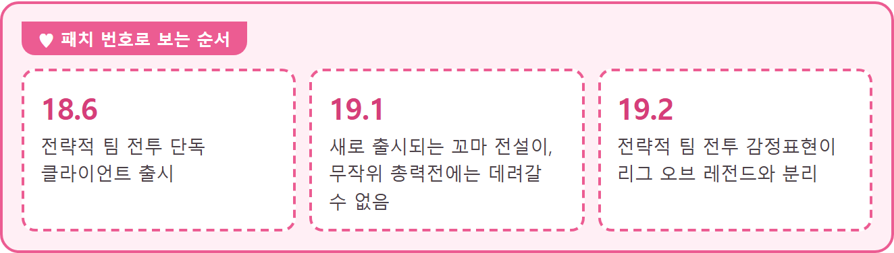

롤토체스 단독 클라이언트, 꼬마 전설이·감정표현 분리 한 표 정리
롤토체스가 단독 클라이언트로 나오면서 리그 오브 레전드에서 모은 꼬마 전설이랑 감정표현은 어떻게 되나 궁금하신 분들 많으시죠. 이런 꾸미기 연동 소식이 나오면 이미 가진 게 어떻게 되는지부터 궁금해지죠. 그래서 11월 4일(한국 시간)에 올라온 18.6 패치 노트를 읽어 봤는데, 이미 가진 건 두 게임에서 그대로 쓰고 앞으로 새로 나오는 것부터 서로 갈라진다는 게 핵심이에요. 이 글은 18.6 패치 노트와 개발자 문서 기준이라 이후 공지로 달라질 수 있습니다.
롤토체스 단독 클라이언트로 무엇이 갈라지나요
새로 출시되는 꼬마 전설이는 19.1 패치부터 리그 오브 레전드 무작위 총력전에 데려갈 수 없고, 감정표현은 19.2 패치부터 리그 오브 레전드에서 얻은 것과 분리돼요.

날짜는 아직 안 나와서 패치 번호로 적었어요.
| 구분 | 기준 패치 | 기준 이후 새로 출시 | 기준 이전에 출시된 것 |
|---|---|---|---|
| 꼬마 전설이 | 19.1 | 리그 오브 레전드 무작위 총력전에 데려갈 수 없음 | 칼바람 나락에 계속 데려갈 수 있음 |
| 감정표현 | 19.2 | 리그 오브 레전드에서 얻은 감정표현과 분리 | 두 게임 모두에서 계속 사용 가능 |
왜 따로 쓰게 되는 걸까요
전략적 팀 전투와 리그 오브 레전드가 서로 다른 엔진으로 개발되고 있기 때문이에요. 두 게임에서 같이 쓰던 꾸미기 일부가 앞으로는 연동되지 않는다고 안내돼 있고, 예로 든 게 꼬마 전설이와 감정표현이에요. 이 둘 말고 다른 건 아직 안 알려졌어요. 단독 클라이언트 출시는 18.7 이후 세트 19까지 이어질 개선의 토대라는 설명도 붙어 있답니다.
꼬마 전설이는 출시 시점으로 갈려요
꼬마 전설이는 19.1 패치 이전에 출시됐는지, 그 뒤에 새로 출시되는지로 갈려요. 헷갈리기 쉬운 이름이 하나 있는데, 칼바람 나락은 무작위 총력전에서 쓰는 맵 중 하나이고 노트는 두 이름을 한 흐름으로 적었어요(라이엇 고객지원 안내). 그래서 이름이 아니라 출시 시점이 기준이고, 지금 키우는 꼬마 전설이는 계속 데리고 다닐 수 있다고 안내돼 있어요. 새로 나오는 쪽이 궁금하시면 세트 19 감사 임무 보상 글을 먼저 보세요.
감정표현은 한 패치 늦은 19.2부터 갈려요
전략적 팀 전투의 감정표현은 19.2 패치부터 리그 오브 레전드에서 얻은 감정표현과 분리돼요.
꼬마 전설이는 19.1, 감정표현은 19.2라서 기준 패치가 하나 어긋나 있어요. 19.2 이전에 출시된 감정표현은 두 게임 모두에서 계속 쓸 수 있고, 분리 뒤에 나오는 것이 어느 쪽에서 얻어지고 쓰이는지는 아직 안 알려졌어요. 이미 모아 둔 감정표현이 있는 분은 당장 달라지는 게 없고, 변화는 19.2 이후 새로 나오는 것부터 시작돼요.
내 상황에 따라 이렇게 보시면 돼요
· 지금 쓰는 꼬마 전설이나 감정표현이 있다면 — 19.1·19.2 이전에 출시된 것이라 지금 쓰는 방식 그대로 이어져요.
· 새로 나오는 꼬마 전설이를 노린다면 — 리그 오브 레전드 무작위 총력전에 데려갈 수 없으니 그 용도로 고르실 건지부터 정해 두세요.
· 리그 오브 레전드에서 감정표현을 모으고 있다면 — 19.2부터 나오는 것은 롤토체스와 분리되니 그 시점을 기준으로 챙기면 편해요.
아직 나오지 않은 정보
배포 쪽은 단독 클라이언트가 출시되는 만큼 PC와 모바일 모두 배포가 평소보다 오래 걸릴 것으로 예상된다고 하고, 18.6 패치는 다운로드 용량도 크다고 안내돼 있어요. 이후 패치는 정상 규모로 돌아간다고 해요. 18.6 패치를 배포하는 정확한 시각은 각 지역에 적용하면서 지역별로 따로 알려 준다고 해요.
확인 위치: 라이엇 공식 공지 · 전략적 팀 전투 개발자 문서 · 확인되면 이 박스를 실제 내용으로 바꿔 주세요.
| 항목 | 상태 |
|---|---|
| 19.1·19.2 패치 적용 날짜 | 아직 없어요 |
| 다운로드 용량 수치 | 커진다는 안내만 있고 숫자는 없어요 |
| 설치 방식(따로 받는지) | 안내 없음 |
| 기존 계정 연동과 로그인 방식 | 안내 없음 |
| PC·모바일 차이 | 개발자 문서에는 PC 다운로드 용량이 평소보다 더 클 예정이라는 말이 있는데 수치는 없고, 모바일은 따로 안 나와 있어요 |
| 19.2 이후 새 감정표현의 세부 처리 | 안내 없음 |
자주 묻는 질문
Q. 단독 클라이언트로 나뉘면 리그 오브 레전드와는 어떻게 오가나요?
개발자 문서에는 단독 클라이언트가 되어도 리그 오브 레전드(협곡이나 무작위 총력전)와 광장 사이를 버튼 한 번으로 오갈 수 있다고 안내돼 있어요. 따로 받아야 하는지 같은 설치 방식은 아직 안내가 안 나왔네요. 감정표현은 19.2 패치 이전에 출시된 것이라면 두 게임 모두에서 쓸 수 있다고 해요.
가진 건 건드리지 않고 새로 나오는 것만 갈리는 구조라, 지금 모으던 걸 서둘러 정리할 필요는 없어 보여요.
✔ 롤토체스 같이 보기 좋은 내용
· 롤토체스 감사 임무 보상, 1판 보물 토큰 500개와 20판 미니 챔피언
· 롤토체스 18.5c 패치, 카직스·덩굴정령·정의의 손길 3건 수치 정리
참고한 곳
· 라이엇게임즈 공식 — 전략적 팀 전투 18.6 패치 (게시 2026.11.04 한국 시간)
· 라이엇게임즈 공식 — 전략적 팀 전투 개발자 문서: 클라이언트, 다음 세트 미리보기 및 감사 임무
· 라이엇 고객지원 — 무작위 총력전 게임 모드